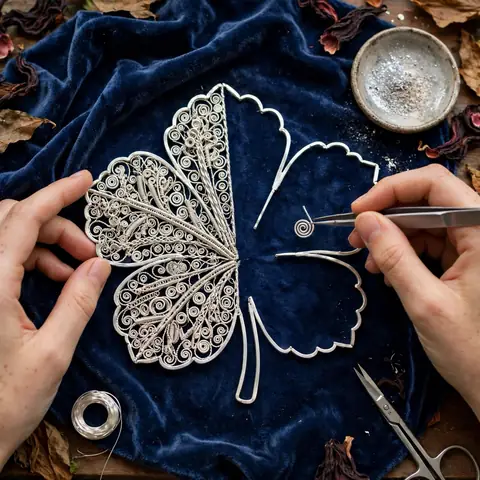
十大雅集 / 匠心成物
VIII
匠心成物
传统技艺
收录国家级代表性项目 287 项、629 子项，申报地区涉及 33 个省级行政区，另有中直单位申报的 12 子项、新疆生产建设兵团申报的 1 子项。子项最多的地区：浙江省（54）、北京市（42）、江苏省（38）。
项目档案库
287 项、629 子项
（本页配图如无特别标注，均为 AI 生成的示意图，非实拍。）
第 3 / 5 页（VIII-121 至 VIII-180）
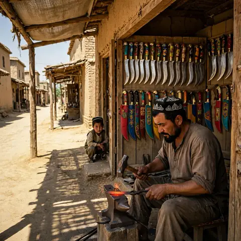
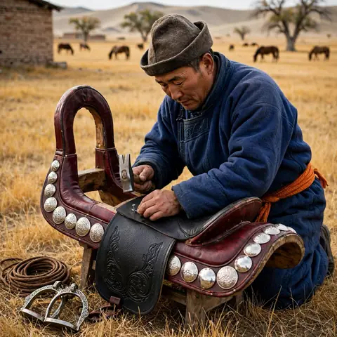
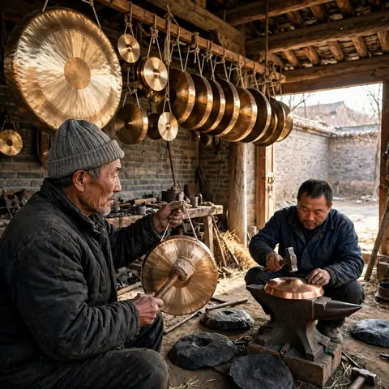
VIII-12415 项子项目民族乐器制作技艺
山西省 · 吉林省 · 江苏省 等 12 地
展开档案明细15 条
- 民族乐器制作技艺（长子响铜乐器制作技艺）山西省长子县2008 第二批 · 新增项目官方页 →
- 民族乐器制作技艺（朝鲜族民族乐器制作技艺）吉林省延边朝鲜族自治州2008 第二批 · 新增项目官方页 →
- 民族乐器制作技艺（苏州民族乐器制作技艺）江苏省苏州市2008 第二批 · 新增项目官方页 →
- 民族乐器制作技艺（漳州蔡福美传统制鼓技艺）福建省漳州市2008 第二批 · 新增项目官方页 →
- 民族乐器制作技艺（维吾尔族乐器制作技艺）新疆维吾尔自治区疏附县2008 第二批 · 新增项目官方页 →
- 民族乐器制作技艺（维吾尔族乐器制作技艺）新疆维吾尔自治区新和县2008 第二批 · 新增项目官方页 →
- 民族乐器制作技艺（宏音斋笙管制作技艺）北京市海淀区2011 第三批 · 扩展项目官方页 →
- 民族乐器制作技艺（蒙古族拉弦乐器制作技艺）内蒙古自治区科尔沁右翼中旗2011 第三批 · 扩展项目官方页 →
- 民族乐器制作技艺（马头琴制作技艺）吉林省前郭尔罗斯蒙古族自治县2011 第三批 · 扩展项目官方页 →
- 民族乐器制作技艺（上海民族乐器制作技艺）上海市闵行区2011 第三批 · 扩展项目官方页 →
- 民族乐器制作技艺（苗族芦笙制作技艺）贵州省凯里市2011 第三批 · 扩展项目官方页 →
- 民族乐器制作技艺（傣族象脚鼓制作技艺）云南省临沧市临翔区2011 第三批 · 扩展项目官方页 →
- 民族乐器制作技艺（扎念琴制作技艺）西藏自治区拉孜县2014 第四批 · 扩展项目官方页 →
- 民族乐器制作技艺（京胡制作技艺）北京市西城区2021 第五批 · 扩展项目官方页 →
- 民族乐器制作技艺（坛下乡铜锣传统制作技艺）湖南省衡阳市耒阳市2021 第五批 · 扩展项目官方页 →
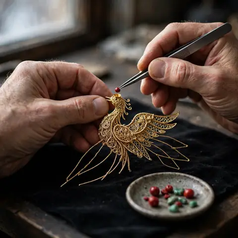
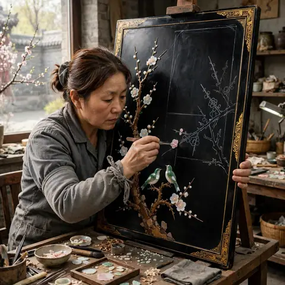
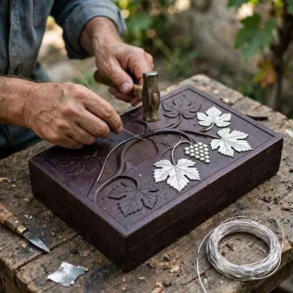
VIII-1278 项子项目漆器髹饰技艺
安徽省 · 重庆市 · 山西省 等 7 地
展开档案明细8 条
- 漆器髹饰技艺（徽州漆器髹饰技艺）安徽省黄山市屯溪区2008 第二批 · 新增项目官方页 →
- 漆器髹饰技艺（重庆漆器髹饰技艺）重庆市2008 第二批 · 新增项目官方页 →
- 漆器髹饰技艺（绛州剔犀技艺）山西省新绛县2011 第三批 · 扩展项目官方页 →
- 漆器髹饰技艺（鄱阳脱胎漆器髹饰技艺）江西省鄱阳县2011 第三批 · 扩展项目官方页 →
- 漆器髹饰技艺（潍坊嵌银髹漆技艺）山东省潍坊市2011 第三批 · 扩展项目官方页 →
- 漆器髹饰技艺（楚式漆器髹饰技艺）湖北省荆州市2011 第三批 · 扩展项目官方页 →
- 漆器髹饰技艺（阳江漆器髹饰技艺）广东省阳江市2011 第三批 · 扩展项目官方页 →
- 漆器髹饰技艺（稷山螺钿漆器髹饰技艺）山西省稷山县2014 第四批 · 扩展项目官方页 →
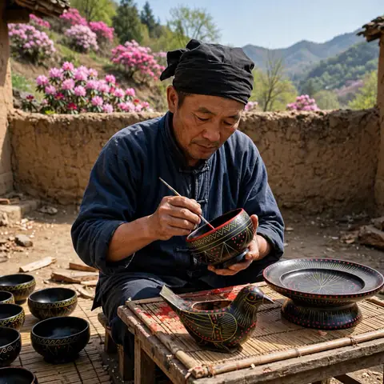
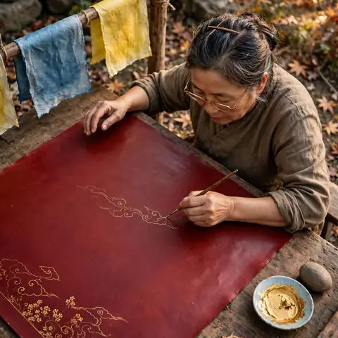
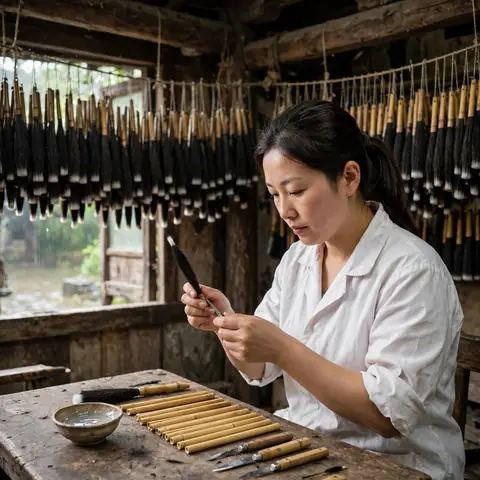
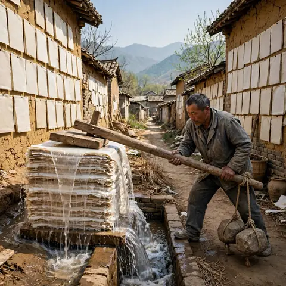
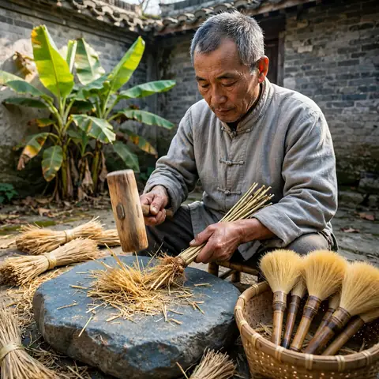
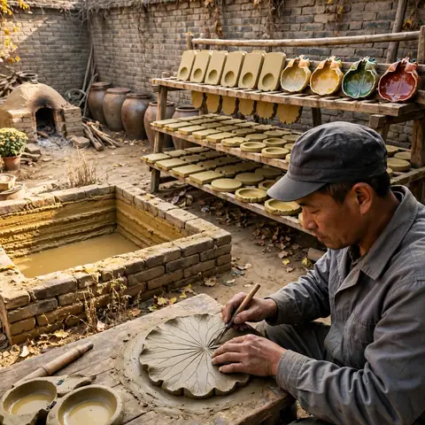
VIII-13310 项子项目砚台制作技艺
河北省 · 山西省 · 甘肃省 等 8 地
展开档案明细10 条
- 砚台制作技艺（易水砚制作技艺）河北省易县2008 第二批 · 新增项目官方页 →
- 砚台制作技艺（澄泥砚制作技艺）山西省新绛县2008 第二批 · 新增项目官方页 →
- 砚台制作技艺（洮砚制作技艺）甘肃省卓尼县2008 第二批 · 新增项目官方页 →
- 砚台制作技艺（洮砚制作技艺）甘肃省岷县2008 第二批 · 新增项目官方页 →
- 砚台制作技艺（贺兰砚制作技艺）宁夏回族自治区银川市2011 第三批 · 扩展项目官方页 →
- 砚台制作技艺（松花石砚制作技艺）辽宁省本溪市2014 第四批 · 扩展项目官方页 →
- 砚台制作技艺（潭柘紫石砚雕刻技艺）北京市门头沟区2021 第五批 · 扩展项目官方页 →
- 砚台制作技艺（修水贡砚制作技艺）江西省九江市修水县2021 第五批 · 扩展项目官方页 →
- 砚台制作技艺（石城砚制作技艺）江西省赣州市石城县2021 第五批 · 扩展项目官方页 →
- 砚台制作技艺（思州石砚制作技艺）贵州省黔东南苗族侗族自治州岑巩县2021 第五批 · 扩展项目官方页 →
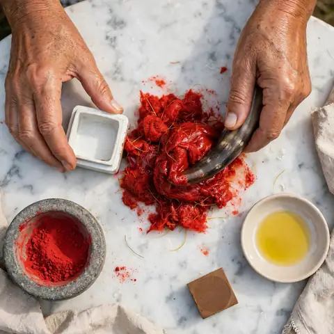
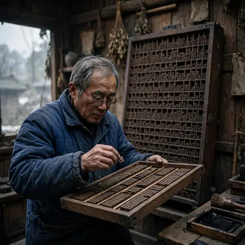
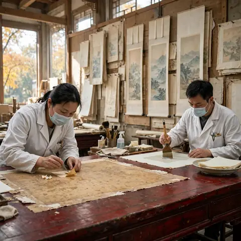
VIII-1367 项子项目装裱修复技艺
中直单位 · 北京市 · 江苏省 等 5 地
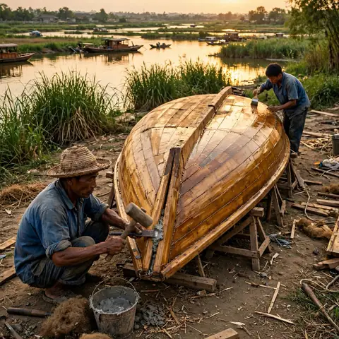
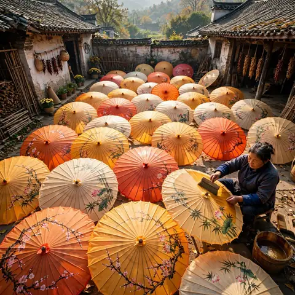
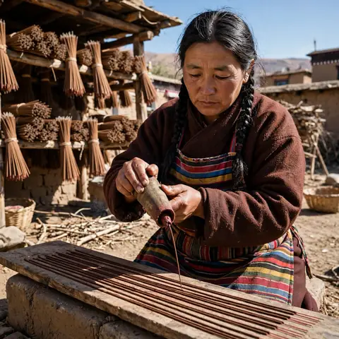
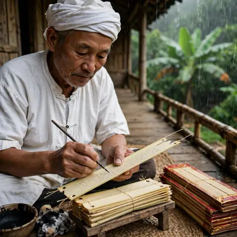
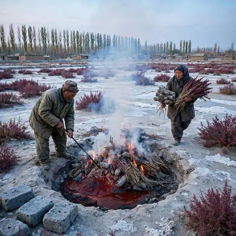
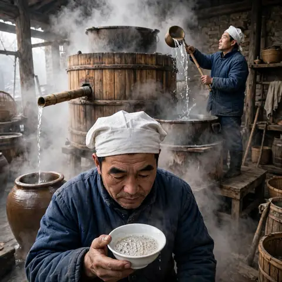
VIII-14420 项子项目蒸馏酒传统酿造技艺
北京市 · 河北省 · 山西省 等 13 地
展开档案明细20 条
- 蒸馏酒传统酿造技艺（北京二锅头酒传统酿造技艺）北京红星股份有限公司2008 第二批 · 新增项目官方页 →
- 蒸馏酒传统酿造技艺（北京二锅头酒传统酿造技艺）北京顺鑫农业股份有限公司2008 第二批 · 新增项目官方页 →
- 蒸馏酒传统酿造技艺（衡水老白干传统酿造技艺）河北省衡水市2008 第二批 · 新增项目官方页 →
- 蒸馏酒传统酿造技艺（山庄老酒传统酿造技艺）河北省平泉县2008 第二批 · 新增项目官方页 →
- 蒸馏酒传统酿造技艺（板城烧锅酒传统五甑酿造技艺）河北省承德县2008 第二批 · 新增项目官方页 →
- 蒸馏酒传统酿造技艺（梨花春白酒传统酿造技艺）山西省朔州市2008 第二批 · 新增项目官方页 →
- 蒸馏酒传统酿造技艺（老龙口白酒传统酿造技艺）辽宁省沈阳市2008 第二批 · 新增项目官方页 →
- 蒸馏酒传统酿造技艺（大泉源酒传统酿造技艺）吉林省通化县2008 第二批 · 新增项目官方页 →
- 蒸馏酒传统酿造技艺（宝丰酒传统酿造技艺）河南省宝丰县2008 第二批 · 新增项目官方页 →
- 蒸馏酒传统酿造技艺（五粮液酒传统酿造技艺）四川省宜宾市2008 第二批 · 新增项目官方页 →
- 蒸馏酒传统酿造技艺（水井坊酒传统酿造技艺）四川省成都市2008 第二批 · 新增项目官方页 →
- 蒸馏酒传统酿造技艺（剑南春酒传统酿造技艺）四川省绵竹市2008 第二批 · 新增项目官方页 →
- 蒸馏酒传统酿造技艺（古蔺郎酒传统酿造技艺）四川省古蔺县2008 第二批 · 新增项目官方页 →
- 蒸馏酒传统酿造技艺（沱牌曲酒传统酿造技艺）四川省射洪县2008 第二批 · 新增项目官方页 →
- 蒸馏酒传统酿造技艺（洋河酒酿造技艺）江苏省宿迁市2021 第五批 · 扩展项目官方页 →
- 蒸馏酒传统酿造技艺（古井贡酒酿造技艺）安徽省亳州市2021 第五批 · 扩展项目官方页 →
- 蒸馏酒传统酿造技艺（景芝酒传统酿造技艺）山东省潍坊市安丘市2021 第五批 · 扩展项目官方页 →
- 蒸馏酒传统酿造技艺（董酒酿制技艺）贵州省遵义市汇川区2021 第五批 · 扩展项目官方页 →
- 蒸馏酒传统酿造技艺（西凤酒酿造技艺）陕西省宝鸡市凤翔区2021 第五批 · 扩展项目官方页 →
- 蒸馏酒传统酿造技艺（青海青稞酒传统酿造技艺）青海省海东市互助土族自治县2021 第五批 · 扩展项目官方页 →
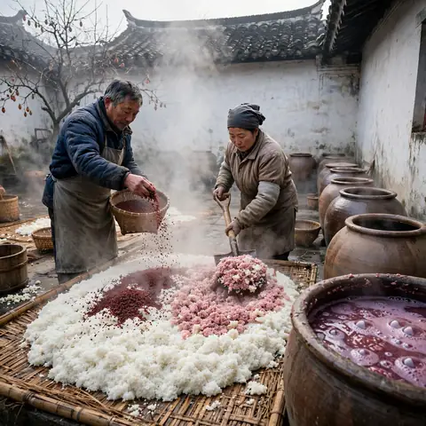
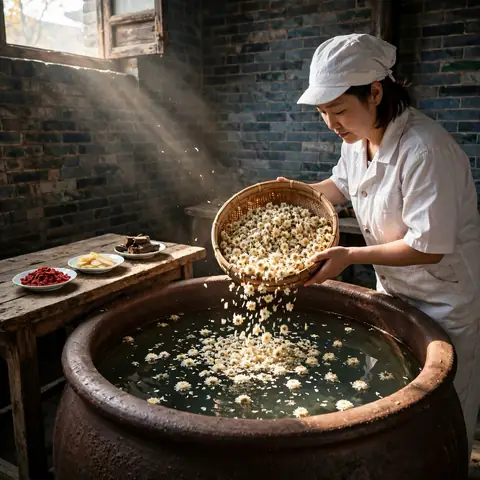
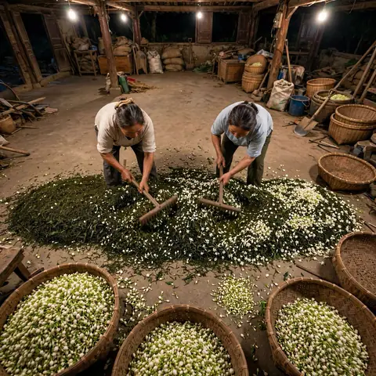
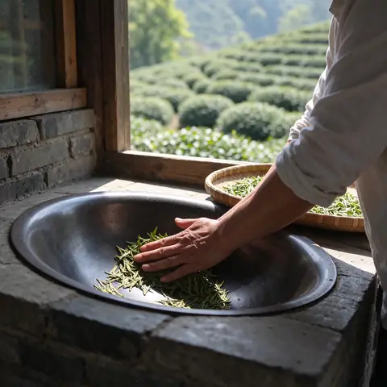
VIII-14815 项子项目绿茶制作技艺
浙江省 · 安徽省 · 江苏省 等 8 地
展开档案明细15 条
- 绿茶制作技艺（西湖龙井）浙江省杭州市2008 第二批 · 新增项目官方页 →
- 绿茶制作技艺（婺州举岩）浙江省金华市2008 第二批 · 新增项目官方页 →
- 绿茶制作技艺（黄山毛峰）安徽省黄山市徽州区2008 第二批 · 新增项目官方页 →
- 绿茶制作技艺（太平猴魁）安徽省黄山市黄山区2008 第二批 · 新增项目官方页 →
- 绿茶制作技艺（六安瓜片）安徽省六安市裕安区2008 第二批 · 新增项目官方页 →
- 绿茶制作技艺（碧螺春制作技艺）江苏省苏州市吴中区2011 第三批 · 扩展项目官方页 →
- 绿茶制作技艺（紫笋茶制作技艺）浙江省长兴县2011 第三批 · 扩展项目官方页 →
- 绿茶制作技艺（安吉白茶制作技艺）浙江省安吉县2011 第三批 · 扩展项目官方页 →
- 绿茶制作技艺（赣南客家擂茶制作技艺）江西省全南县2014 第四批 · 扩展项目官方页 →
- 绿茶制作技艺（婺源绿茶制作技艺）江西省婺源县2014 第四批 · 扩展项目官方页 →
- 绿茶制作技艺（信阳毛尖茶制作技艺）河南省信阳市2014 第四批 · 扩展项目官方页 →
- 绿茶制作技艺（恩施玉露制作技艺）湖北省恩施市2014 第四批 · 扩展项目官方页 →
- 绿茶制作技艺（都匀毛尖茶制作技艺）贵州省都匀市2014 第四批 · 扩展项目官方页 →
- 绿茶制作技艺（雨花茶制作技艺）江苏省南京市2021 第五批 · 扩展项目官方页 →
- 绿茶制作技艺（蒙山茶传统制作技艺）四川省雅安市2021 第五批 · 扩展项目官方页 →
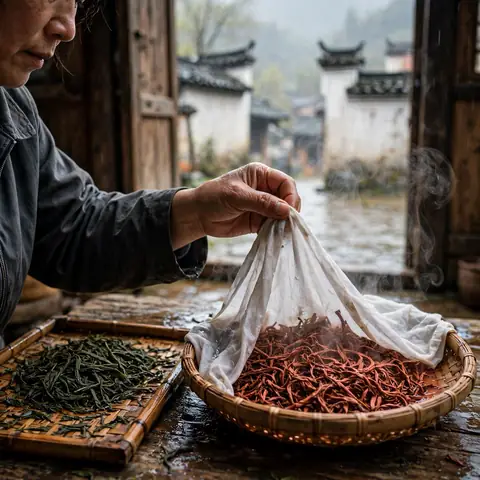
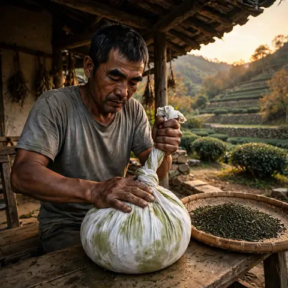
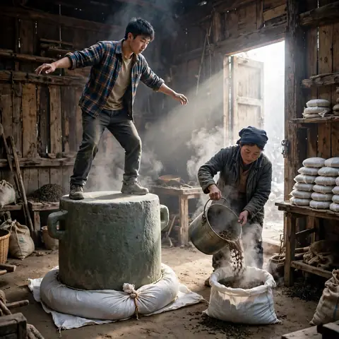
- VIII-1528 项子项目
黑茶制作技艺
湖南省 · 四川省 · 云南省 等 6 地
展开档案明细8 条
- 黑茶制作技艺（千两茶制作技艺）湖南省安化县2008 第二批 · 新增项目官方页 →
- 黑茶制作技艺（茯砖茶制作技艺）湖南省益阳市2008 第二批 · 新增项目官方页 →
- 黑茶制作技艺（南路边茶制作技艺）四川省雅安市2008 第二批 · 新增项目官方页 →
- 黑茶制作技艺（下关沱茶制作技艺）云南省大理白族自治州2011 第三批 · 扩展项目官方页 →
- 黑茶制作技艺（赵李桥砖茶制作技艺）湖北省赤壁市2014 第四批 · 扩展项目官方页 →
- 黑茶制作技艺（六堡茶制作技艺）广西壮族自治区苍梧县2014 第四批 · 扩展项目官方页 →
- 黑茶制作技艺（长盛川青砖茶制作技艺）湖北省宜昌市伍家岗区2021 第五批 · 扩展项目官方页 →
- 黑茶制作技艺（咸阳茯茶制作技艺）陕西省咸阳市2021 第五批 · 扩展项目官方页 →
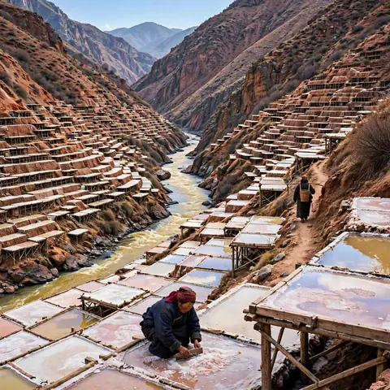
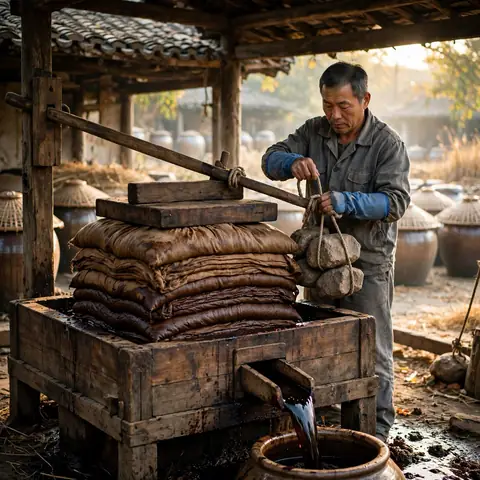
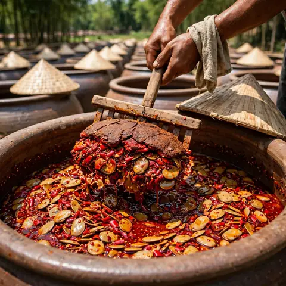
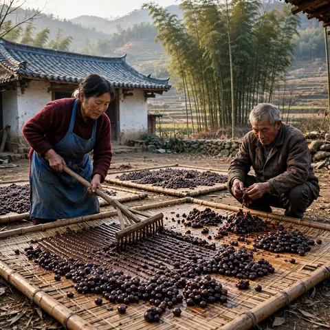
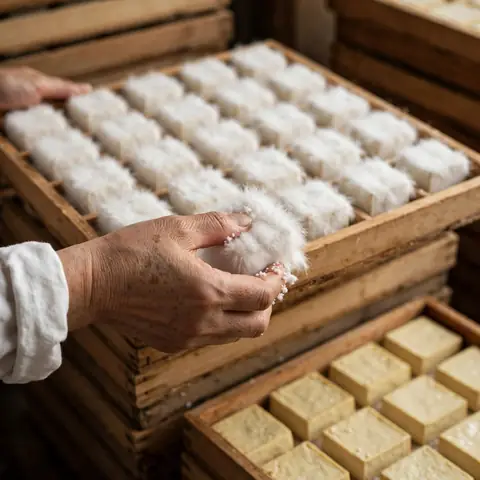
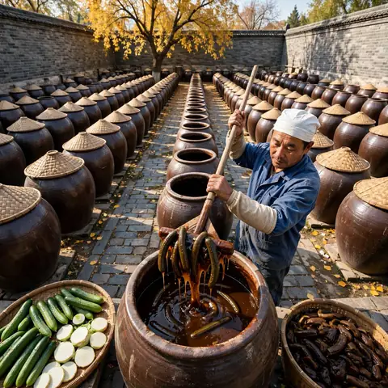
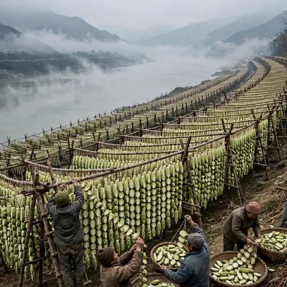
- VIII-16016 项子项目
传统面食制作技艺
山西省 · 天津市 · 上海市 等 9 地
展开档案明细16 条
- 传统面食制作技艺（龙须拉面和刀削面制作技艺）山西省全晋会馆2008 第二批 · 新增项目官方页 →
- 传统面食制作技艺（抿尖面和猫耳朵制作技艺）山西省晋韵楼2008 第二批 · 新增项目官方页 →
- 传统面食制作技艺（天津“狗不理”包子制作技艺）天津市和平区2011 第三批 · 扩展项目官方页 →
- 传统面食制作技艺（稷山传统面点制作技艺）山西省稷山县2011 第三批 · 扩展项目官方页 →
- 传统面食制作技艺（桂发祥十八街麻花制作技艺）天津市河西区2014 第四批 · 扩展项目官方页 →
- 传统面食制作技艺（南翔小笼馒头制作技艺）上海市嘉定区2014 第四批 · 扩展项目官方页 →
- 传统面食制作技艺（太谷饼制作技艺）山西省晋中市太谷区2021 第五批 · 扩展项目官方页 →
- 传统面食制作技艺（李连贵熏肉大饼制作技艺）吉林省四平市2021 第五批 · 扩展项目官方页 →
- 传统面食制作技艺（邵永丰麻饼制作技艺）浙江省衢州市柯城区2021 第五批 · 扩展项目官方页 →
- 传统面食制作技艺（缙云烧饼制作技艺）浙江省丽水市缙云县2021 第五批 · 扩展项目官方页 →
- 传统面食制作技艺（老孙家羊肉泡馍制作技艺）陕西省2021 第五批 · 扩展项目官方页 →
- 传统面食制作技艺（西安贾三灌汤包子制作技艺）陕西省2021 第五批 · 扩展项目官方页 →
- 传统面食制作技艺（兰州牛肉面制作技艺）甘肃省兰州市2021 第五批 · 扩展项目官方页 →
- 传统面食制作技艺（中宁蒿子面制作技艺）宁夏回族自治区中卫市中宁县2021 第五批 · 扩展项目官方页 →
- 传统面食制作技艺（馕制作技艺）新疆维吾尔自治区2021 第五批 · 扩展项目官方页 →
- 传统面食制作技艺（塔塔尔族传统糕点制作技艺）新疆维吾尔自治区塔城地区塔城市2021 第五批 · 扩展项目官方页 →
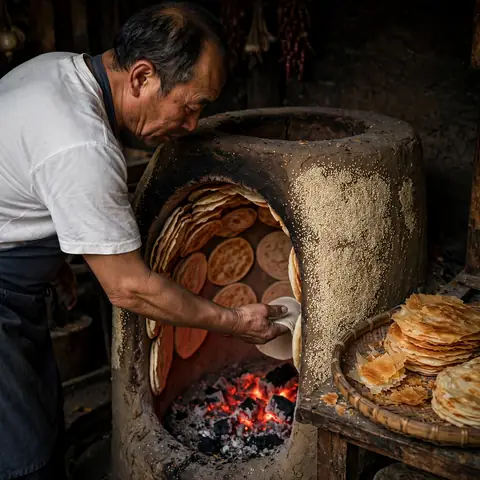
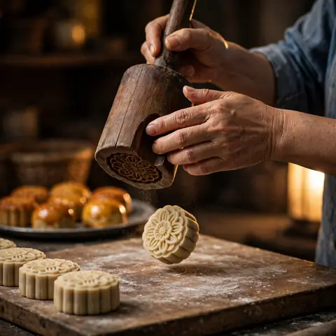
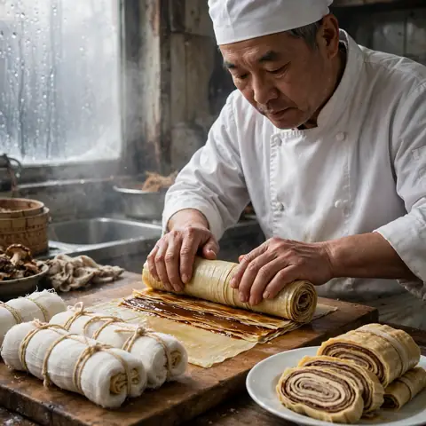
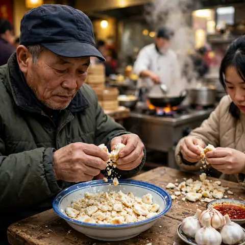
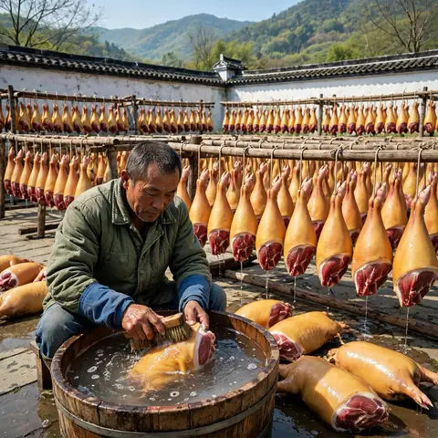
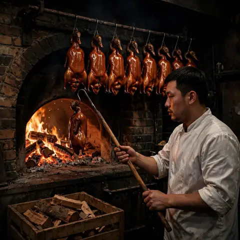
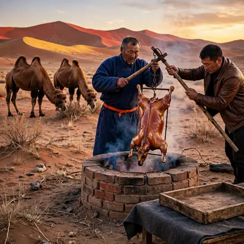
VIII-1687 项子项目牛羊肉烹制技艺
北京市 · 山西省 · 内蒙古自治区 等 4 地
展开档案明细7 条
- 牛羊肉烹制技艺（东来顺涮羊肉制作技艺）北京市东来顺集团有限责任公司2008 第二批 · 新增项目官方页 →
- 牛羊肉烹制技艺（鸿宾楼全羊席制作技艺）北京市鸿宾楼餐饮有限责任公司2008 第二批 · 新增项目官方页 →
- 牛羊肉烹制技艺（月盛斋酱烧牛羊肉制作技艺）北京月盛斋清真食品有限公司2008 第二批 · 新增项目官方页 →
- 牛羊肉烹制技艺（北京烤肉制作技艺）北京市聚德华天控股有限公司2008 第二批 · 新增项目官方页 →
- 牛羊肉烹制技艺（冠云平遥牛肉传统加工技艺）山西省冠云平遥牛肉集团有限公司2008 第二批 · 新增项目官方页 →
- 牛羊肉烹制技艺（烤全羊技艺）内蒙古自治区阿拉善盟2008 第二批 · 新增项目官方页 →
- 牛羊肉烹制技艺（宁夏手抓羊肉制作技艺）宁夏回族自治区吴忠市2021 第五批 · 扩展项目官方页 →
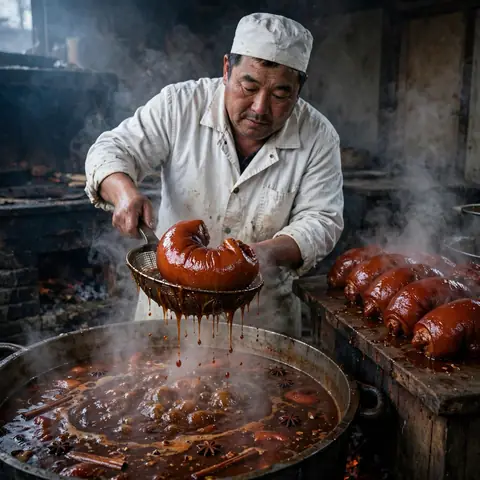
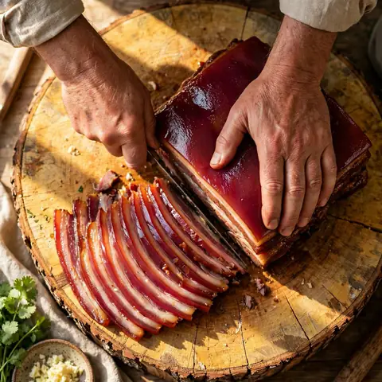
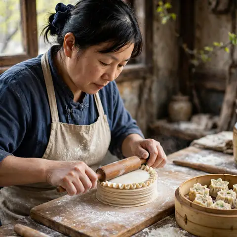
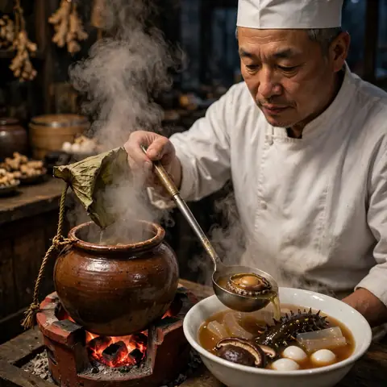
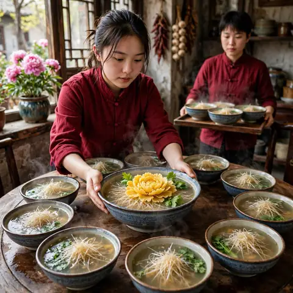
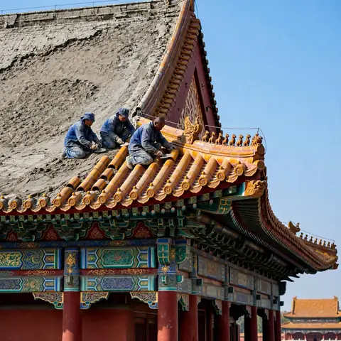
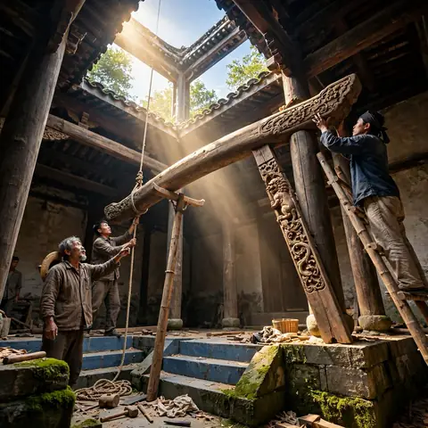
名录数据来源：中国非物质文化遗产网